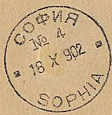
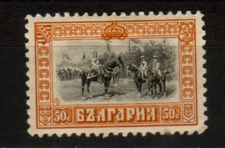

{kind=link}

Return To Catalogue - Bulgaria 1879-1895 - Bulgaria 1916-1919
Note: on my website many of the
pictures can not be seen! They are of course present in the
catalogue;
contact me if you want to purchase it.
For stamps of Bulgaria from 1879 to 1895 click here.
1 s green 5 s blue 15 s violet 25 s red
These stamps have perforation 13. Two types exist of the 15 s, differing in the value inscription.
Value of the stamps |
|||
vc = very common c = common * = not so common ** = uncommon |
*** = very uncommon R = rare RR = very rare RRR = extremely rare |
||
| Value | Unused | Used | Remarks |
| 1 s | c | c | |
| 5 s | * | c | |
| 15 s | * | * | |
| 25 s | ** | ** | |
5 s red 15 s green
These stamps have perforation 13.
Value of the stamps |
|||
vc = very common c = common * = not so common ** = uncommon |
*** = very uncommon R = rare RR = very rare RRR = extremely rare |
||
| Value | Unused | Used | Remarks |
| 5 s | ** | ** | |
| 15 s | ** | ** | |
Forgeries are described at http://home.no.net/bhb1/stamps.htm. There is a small extrusion from the white circle at the left upper part which extends below the '8' of '18' in the forgeries (see images below).

Forgery of both values


1 s lilac and black 2 s green and blue 3 s orange and black 5 s green and brown 10 s red and brown 15 s red and black 25 s blue and black 30 s brown and black 50 s blue and brown 1 L red and green 2 L red and black 3 L grey and brown Surcharged
'5' on 15 s red and black (1909) '10' (black or blue) on 15 s red and black (1903) '25' (red) on 30 s brown and black Overprinted '1910' and surcharged (all in blue)
'1' on 3 s orange and black '5' on 15 s red and black
These stamps have perforation 12 1/2.
Value of the stamps |
|||
vc = very common c = common * = not so common ** = uncommon |
*** = very uncommon R = rare RR = very rare RRR = extremely rare |
||
| Value | Unused | Used | Remarks |
| 1 s | * | c | |
| 2 s | * | c | |
| 3 s | * | c | |
| 5 s | * | c | |
| 10 s | * | c | |
| 15 s | ** | c | |
| 25 s | ** | c | |
| 30 s | *** | * | |
| 50 s | *** | * | |
| 1 L | *** | * | Two types, value in upper corners small or large |
| 2 L | *** | *** | |
| 3 L | R | *** | |
| Surcharged | |||
| 5 on 15 s | * | * | Inverted surcharge: RR |
| 10 on 15 c | ** | c | Inverted surcharge: RR Blue surcharge: c |
| 25 on 30 c | *** | * | |
| Overprinted '1910' and surcharged | |||
| 1 on 3 s | * | * | |
| 5 on 15 s | ** | * | |
I have seen postal stationery in the same design in the values (one colour only): 5 s green and 10 s red.

(Genuine?)
5 s red 10 s green 15 s blue
The above stamps have perforation 11 1/2.
Value of the stamps |
|||
vc = very common c = common * = not so common ** = uncommon |
*** = very uncommon R = rare RR = very rare RRR = extremely rare |
||
| Value | Unused | Used | Remarks |
| 5 s | * | * | |
| 10 s | * | * | |
| 15 s | ** | ** | |
These stamps have been forged massively (if I'm well informed, even two types of forgeries exist, they are both described at http://home.no.net/bhb1/stamps.htm link no longer working!.). These forgeries are quite deceptive and were made by the Italian stamp forger Imperato. The easiest test to determine if a stamp is a forgery or not, is the hanging down right hand of the dead soldier. In the forgeries this hand clearly shows 3 fingers, in the originals the fingers are indistinguishable (from the Forged stamps of all countries by J.Dorn). There are also differences in the word "SCHIPKA" (in the upper left part of the stamp), the "a" (fifth character) is rounded on top in the forgeries while it is straight in the genuine stamps. Also see: http://bigblue1840-1940.blogspot.sg/2015/03/bulgaria-1902-battle-of-shipka-pass.html

In the Fournier Album of Philatelic Forgeries, the above cancel "COFNR No 4 18 X 902 SOPHIA" can be found.
Reduced sizes, on part of envelope
5 s green 10 s red 25 s blue
These stamps have perforation 11 1/2.
Value of the stamps |
|||
vc = very common c = common * = not so common ** = uncommon |
*** = very uncommon R = rare RR = very rare RRR = extremely rare |
||
| Value | Unused | Used | Remarks |
| 5 s | *** | ** | |
| 10 s | *** | ** | |
| 25 s | *** | *** | |



1 s black (ruine) 2 s red and black (King Ferdinand) 3 s red and black (town of Tirnowa) 5 s green and black (King Ferdinand in uniform) 5 s green and brown (King Ferdinand in uniform, 1915) 10 s red and black (King Ferdinand) 10 s red and brown (King Ferdinand, 1915) 15 s brown (landscape) 15 s olive (landscape, 1915) 25 s blue and black (King Ferdinand) 30 s blue and black (convent of Rilo) 30 s olive and brown (convent of Rilo, 1915) 50 s orange and black (King Ferdinand on a horse) 1 L brown 2 L violet and black (convent of Troiza) 3 L violet and black (Varna)
In 1921, a 50 s orange stamp was issued very similar to the 3 s red and black stamp (only the ornaments in the bottom are different), also a 3 L lilac with identical design to the 1 s stamp. The 50 s was later also issued in the colour blue.
Value of the stamps |
|||
vc = very common c = common * = not so common ** = uncommon |
*** = very uncommon R = rare RR = very rare RRR = extremely rare |
||
| Value | Unused | Used | Remarks |
| 1 s | c | c | Two shades of colour were issued greenish black (perforation 12) or bluish black (perforation 11 1/2, 1915) |
| 2 s | c | c | perforation 12 |
| 3 s | * | c | perforation 12 |
| 5 s green and black | * | c | perforation 12 |
| 5 s green and brown | perforation 14 | ||
| 10 s red and black | * | c | perforation 12 |
| 10 s red and brown | c | c | perforation 14 |
| 15 s brown | ** | * | perforation 12 |
| 15 s olive | c | c | perforation 11 1/2 |
| 25 s | * | c | perforation 12 or perforation 11 1/2 (1915) |
| 30 s blue and black | *** | * | perforation 12 |
| 30 s olive and brown | * | * | perforation 14 |
| 50 s | ** | * | perforation 12; With inverted center: RRR |
| 1 L | * | * | perforation 12 |
| 2 L | ** | * | perforation 12 |
| 3 L | *** | *** | perforation 12 |
Surcharged
'10CT.' (red) on 25 s blue and black (1915) 50 s on 1 L brown (1920)
Value of the stamps |
|||
vc = very common c = common * = not so common ** = uncommon |
*** = very uncommon R = rare RR = very rare RRR = extremely rare |
||
| Value | Unused | Used | Remarks |
| 10 CT on 25 s | * | c | perforation 12 |
| 50 s on 1 L | * | * | |
Overprinted '1912-1913' and Bulgarian text (1915)

1 s black (ruine, overprint red) 2 s red and black (King Ferdinand, overprint blue) 3 s red and black (town of Tirnowa) 5 s green and black (King Ferdinand in uniform, overprint red) 10 s red and black (King Ferdiand) 15 s brown (landscape, overprint green) 25 s blue and black (King Ferdinand, overprint red)
Value of the stamps |
|||
vc = very common c = common * = not so common ** = uncommon |
*** = very uncommon R = rare RR = very rare RRR = extremely rare |
||
| Value | Unused | Used | Remarks |
| Perforation 12 | |||
| 1 s | c | c | |
| 2 s | * | * | Overprint in blue: *** |
| 3 s | c | c | |
| 5 s | * | * | Missing 'OCB': *** |
| 10 s | * | c | |
| 15 s | * | * | |
| 25 s | * | * | |
Overprinted '1916-1917' and Bulgarian text


1 s black (overprint red) 5 s green and brown (overprint red) 10 s red and brown (overprint blue) 25 s blue and black (overprint blue)
These stamps were issued for the Bulgarian occupation of Rumania.
Value of the stamps |
|||
vc = very common c = common * = not so common ** = uncommon |
*** = very uncommon R = rare RR = very rare RRR = extremely rare |
||
| Value | Unused | Used | Remarks |
| 1 s | c | c | |
| 5 s | * | * | |
| 10 s | c | c | |
| 25 s | c | c | |
These stamps with overprint 'ELLHNIKH DIOIKHSIS' or 'ELLHNIKH DIOIKHSISDEDEGATS' were issued for Cavalle and Dedeagh (Greec occupation). Example:

These stamps with an Arabic overprint were issued for Thrace, example:

5 s olive 10 s red 25 s blue
These stamps have perforation 12 1/2.
Value of the stamps |
|||
vc = very common c = common * = not so common ** = uncommon |
*** = very uncommon R = rare RR = very rare RRR = extremely rare |
||
| Value | Unused | Used | Remarks |
| 5 s | *** | *** | |
| 10 s | *** | *** | |
| 25 s | *** | *** | |
I have seen postal stationery in this design in the values: 5 s green and 10 s brown.
For stamps of Bulgaria issued from 1916 to 1919, click here.